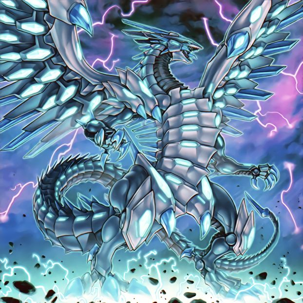
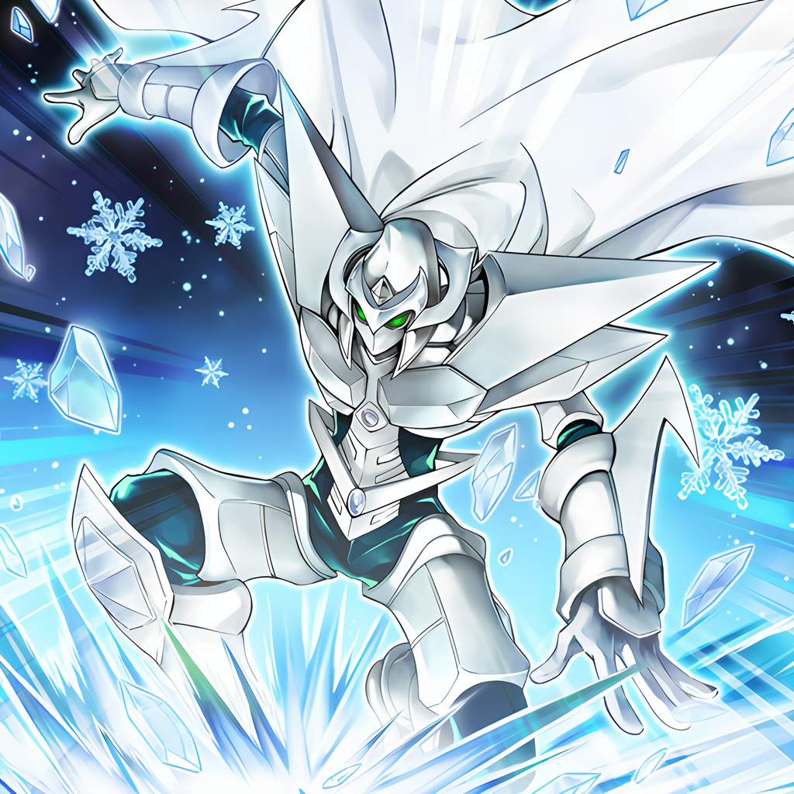
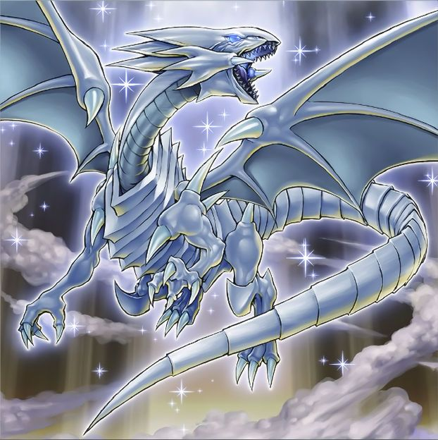
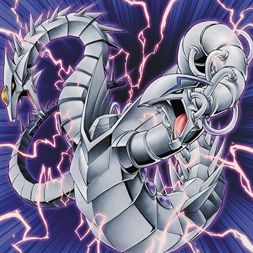
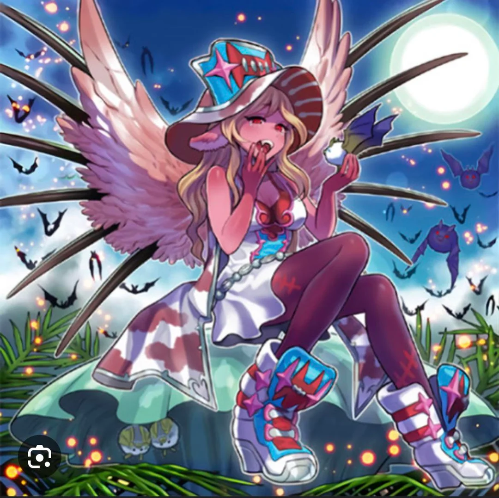

-
Blue eyes chaos max dragon
You can Ritual Summon this card with "Chaos Form". Must be Ritual Summoned. Your opponent cannot target this card with card effects, also it cannot be destroyed by your opponent's card effects. If this card attacks a Defense Position monster, inflict double piercing battle damage to your opponent.
ATK/ 4000 DEF/ 0 -
Elemental HERO Absolute Zero
1 "HERO" monster + 1 WATER monster Must be Fusion Summoned. Gains 500 ATK for each WATER monster on the field, except "Elemental HERO Absolute Zero". if this card leaves the field: Destroy all monsters your opponent controls.
ATK/ 2500 DEF/ 2000 -
Aromágico Manjerona

While your LP are higher than your opponent's, you take no battle damage from attacks involving your Plant monsters. You can only use each of the following effects of "Aromage Marjoram" once per turn. ●When a Plant monster you control is destroyed by battle: You can Special Summon this card from your hand, then gain 500 LP. ●If you gain LP: Target cards in your opponent's GY, up to the number of "Aroma" monsters you control; banish them.
ATK/ 2000 DEF/ 1600 -
Blue Eyes White Dragon
This legendary dragon is a powerful engine of destruction. Virtually invincible, very few have faced this awesome creature and lived to tell the tale.
ATK/ 3000 DEF/ 2500 -
Cyber Twin Dragon
"Cyber Dragon" + "Cyber Dragon" A Fusion Summon of this card can only be done with the above Fusion Materials. This card can make a second attack during each Battle Phase.
ATK/ 2800 DEF/ 2100 -
Doomking Balerdroch

During the Standby Phase, if a face-up card is in a Field Zone and this card is in your GY: You can Special Summon this card in Defense Position. You can only use this effect of "Doomking Balerdroch" once per turn. Once per Chain, when a Zombie monster, except "Doomking Balerdroch", activates its effect (except during the Damage Step) (Quick Effect): You can apply 1 of these effects (but you cannot apply that same effect of "Doomking Balerdroch" again this turn). ●Negate that effect. ●Banish 1 monster from the field or GY.
ATK/ 2800 DEF/ 2000 -
Magician of Chaos

You can Ritual Summon this card with "Chaos Form". This card's name becomes "Dark Magician" while on the field or in the GY. Once per turn, when a Spell/Trap Card or effect is activated (Quick Effect): You can target 1 card on the field; destroy it. If this Ritual Summoned card is destroyed by battle or card effect: You can Special Summon 1 "Chaos" or "Black Luster Soldier" Ritual Monster from your hand, except "Magician of Chaos", ignoring its Summoning conditions
ATK/ 2500 DEF/ 2100 -
Red-Eyes Dark Dragoon

"Dark Magician" + "Red-Eyes Black Dragon" or 1 Dragon Effect Monster Cannot be destroyed by card effects. Neither player can target this card with card effects. During your Main Phase: You can destroy 1 monster your opponent controls, and if you do, inflict damage to your opponent equal to that monster's original ATK. You can use this effect a number of times per turn up to the number of Normal Monsters used as Fusion Material for this card. Once per turn, when a card or effect is activated (Quick Effect): You can discard 1 card; negate the activation, and if you do, destroy that card, and if you do that, this card gains 1000 ATK.
ATK/ 3000 DEF/ 2500 -
Shiranui Sunsaga

1 Zombie Tuner + 1+ non-Tuner Zombie monsters If this card is Special Summoned: You can return any number of your Zombie Synchro Monsters, that are banished or are in your GY, to the Extra Deck, then you can destroy cards your opponent controls, equal to the number of cards returned. If a Zombie monster(s) you control would be destroyed by battle or card effect, you can banish 1 "Shiranui" monster from your GY instead. You can only Special Summon "Shiranui Sunsaga(s)" once per turn.
ATK/ 3500 DEF/ 0 -
The First Dark Lord

3 DARK Fairy monsters Your opponent cannot target Fairy monsters you control with card effects. You can only use 1 of the following effects of "The First Darklord" per turn, and only once that turn. ●If this card is Fusion Summoned using "Darklord Morningstar" as material: You can destroy all cards your opponent controls. ●During the Main Phase (Quick Effect): You can pay 1000 LP; Special Summon 1 Fairy monster from your hand or GY in Defense Position
ATK/ 4000 DEF/ 4000 -
Trident Dragon

1 Dragon Tuner + 1+ non-Tuner Dragon monsters Must be Synchro Summoned. When this card is Synchro Summoned: You can target up to 2 other cards you control; destroy those targets, and if you do, for each destroyed card, this card gains 1 additional attack during each Battle Phase this turn.
ATK/ 3000 DEF/ 2800 -
Unchained Abomination

2+ monsters, including a Link Monster If a card(s) on the field is destroyed by card effect, except by "Unchained Abomination" (except during the Damage Step): You can target 1 card on the field; destroy it. When another monster is destroyed by battle: You can target 1 card on the field; destroy it. During the End Phase: You can target 1 card on the field; destroy it. You can only use each effect of "Unchained Abomination" once per turn.
ATK/ 3000 DEF/ - -
Vampire Vamp

Once per turn, when this card or a "Vampire" monster is Normal Summoned to your field: You can target 1 monster your opponent controls whose ATK is higher than this card's; equip it to this card. Gains ATK equal to the combined original ATK of the monsters equipped to it by this effect. If this card is sent to the GY, while equipped with a card(s) by this effect: Special Summon this card.
ATK/ 2000 DEF/ 2000 -
Vampire Sucker
2 Zombie monsters If you would Tribute a monster(s) for a Tribute Summon, you can Tribute a Zombie monster(s) your opponent controls, even though you do not control them. You can only use each of the following effects of "Vampire Sucker" once per turn. ●You can target 1 monster in your opponent's GY; Special Summon it to your opponent's field in Defense Position, but it becomes a Zombie monster. ●If a Zombie monster(s) is Special Summoned from either GY: Draw 1 card.
ATK/ 1600 DEF/ - -
O Gostoso do Ricardão Milos

A Invocação-Normal deste card não pode ser negada. Quando Invocado por Invocação-Normal, cards e efeitos não podem ser ativados. Não pode ser escolhido como alvo de, ou destruído por, efeitos de card do seu oponente. Se este card atacar um monstro em Posição de Defesa, cause dano de batalha perfurante ao seu oponente.(Efeito Rápido) descarte 1 carta; compre 5 cartas. Uma vez por turno voçê pode fazer o seu oponente ficar hipnotizado por 10 turnos com a sua dança sensual.
ATK/ 8065 DEF/ 5500